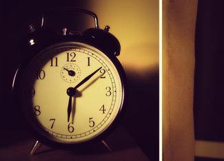

People throughout most of the United States set their clocks ahead by one hour on Sunday for the start of daylight saving time, marking the third year in a row that daylight saving time started three to four weeks early.
The Energy Policy Act of 2005 shifted the start of daylight saving time to the second Sunday in March rather than the first Sunday in April, and extended it through the first Sunday in November rather than the last Sunday in October. The shift started in 2007, and the intent was to save energy, allowing people to take advantage of additional daylight in the evening hours.
Although some people argued that the increased use of lighting in the morning could easily cancel out the gains in the evening, the data suggest otherwise. A report by the U.S. Department of Energy (DOE) released last year found that U.S. electricity use was decreased by 0.5 percent for each day of the extended daylight saving time, resulting in a savings of 0.03 percent for the year as a whole. The savings are small in percentage terms, but in absolute terms, they added up to 1.3 billion kilowatt-hours, which is enough to power about 122,000 average U.S. homes for a year.
The DOE report did find small increases in electricity use in the early morning hours, but those increases were more than cancelled out by the energy savings in the evening. The shift was also found to have no effect on traffic volume and gasoline consumption.
|
 OH GLORY/FLICKR Spring forward: Daylight saving time began starting earlier in 2007. |
|
|